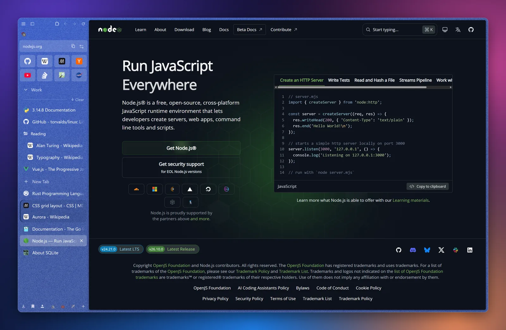
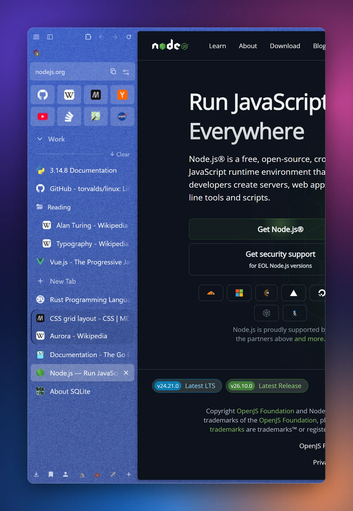
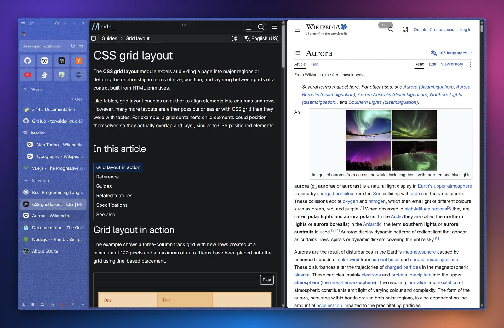
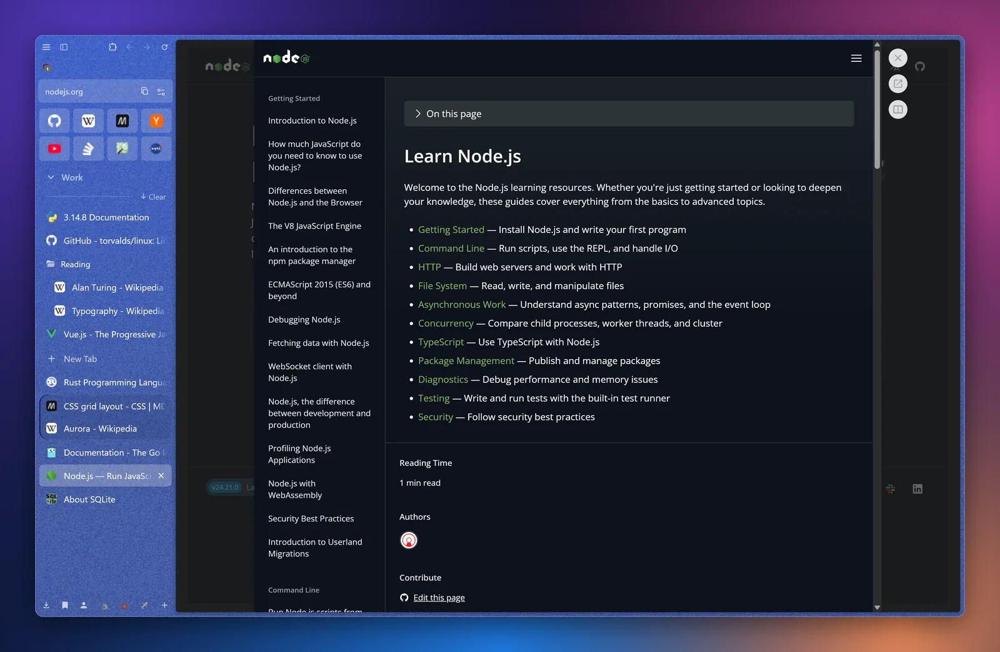
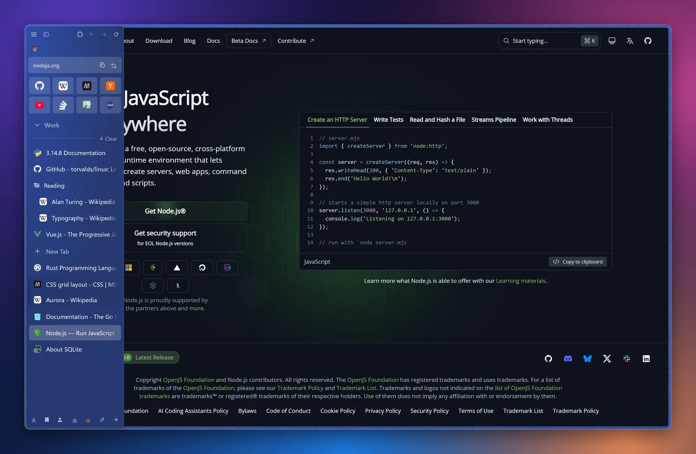

Free browser for Windows 10 and 11
Your tabs, calm and in order.
Nez puts your tabs in a sidebar, keeps your favourite sites one click away and splits your work into Spaces. It runs Chrome extensions, blocks ads out of the box and never talks to Google about you.

Everything in one sidebar
The ideas people loved in Arc and Zen, on the Chromium engine your sites are built for.
Spaces for every part of your life
Work, Personal, Travel: each Space keeps its own tabs, pinned sites and colour. Switch with a swipe or Ctrl+Alt+→, and route sites so they always open in the right Space.
Essentials and pinned folders
Your mail, calendar and chat live as Essentials tiles in every Space. Pin tabs into folders, nest them, or make a live folder that follows an RSS feed or GitHub repository.

Split view
Put two to four tabs side by side and drag the dividers. Read the docs while you write, compare two shops, watch while you work.

Glance and the mini window
Peek at a link in an overlay without opening a tab. Links you open from Discord, Telegram or Outlook land in a small mini window. Read, close, or keep it with one click.

Compact mode
Hide everything but the page. The sidebar slides in when you reach for the edge, on the left or the right. Ctrl+Alt+C toggles it.

Ad blocking built in
uBlock Origin comes installed and keeps itself up to date.
Tabs that tidy themselves
Idle tabs go to sleep to save memory, and tabs you haven't looked at in 12 hours move to an archive you can search.
Chrome extensions
Install from the Chrome Web Store, and they update automatically.
Bring everything with you
Import bookmarks, passwords, history and extensions from Zen, Firefox, Chrome, Edge, Brave and more. Coming from Arc? Your Spaces, pinned tabs and favorites come too.
Containers
Sign in to the same site with two accounts at once, each in its own container.
Made for Windows 11
Mica glass, rounded corners and smooth video, including RTX Video Super Resolution.
Private by default
- No Google services. Nez is built on ungoogled-chromium, so the browser does not send your activity to Google.
- No telemetry. Nez does not collect usage data, crash reports or anything else about you.
- No account needed. Everything stays on your PC.
- What Nez does contact: GitHub to check for Nez updates, and the update servers of your extensions (Google's, for Chrome Web Store extensions) to keep them current. You can switch both off.
- Built on open source. Nez is built on Chromium and ungoogled-chromium, both open source. Report bugs and ideas on GitHub.
Get Nez
Free. Windows 10 and 11, 64-bit. No administrator rights needed.
Download for WindowsNez updates itself. Already have a browser? Nez offers to import everything on first start.
Questions
Is Nez Zen or Arc?
No. Nez is its own browser. It takes inspiration from how Zen and Arc organise tabs, but it is built on Chromium, so it uses the same engine as Chrome and Edge and runs Chrome extensions.
Is it really free?
Yes. There are no paid tiers and no ads in the browser.
Will my extensions work?
Most Chrome extensions work. Install them from the Chrome Web Store as usual.
Can I go back to my old browser?
Any time. Nez does not change your other browsers, and you can uninstall it from Settings, Apps.
Is there a Mac or phone version?
Not yet. Nez is for Windows 10 and 11.
Why does Windows warn about the installer?
New programs need time to build a reputation with Microsoft SmartScreen. Choose “More info”, then “Run anyway”. The warning goes away as more people install Nez.